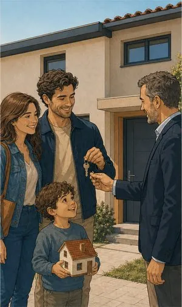
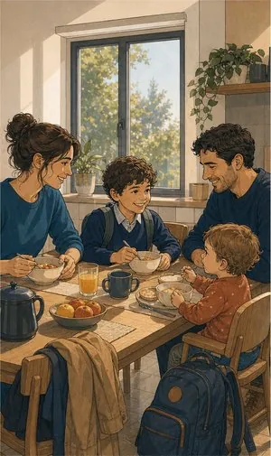
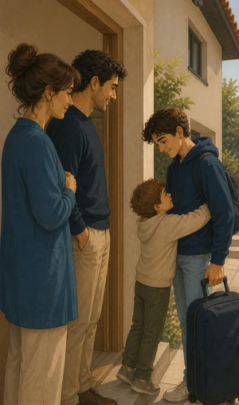
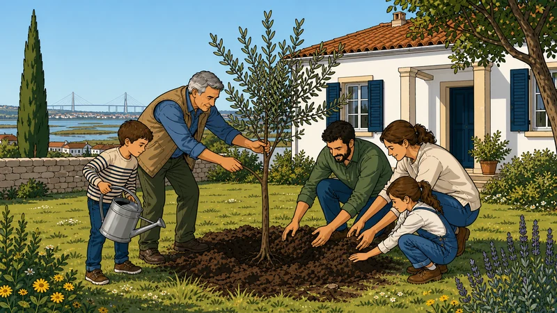

Seguro de vida
É o seguro de que ninguém gosta de falar — e o único que evita que uma perda seja também um problema financeiro.
O que pode incluir
Duas finalidades
muito diferentes.
Há o seguro de vida associado ao crédito à habitação, exigido pelo banco para liquidar a dívida em caso de morte ou invalidez. E há o seguro de vida de proteção familiar, que deixa um capital a quem fica. São produtos diferentes, e é frequente ter-se um e faltar o outro.
Morte
A cobertura base. Paga o capital aos beneficiários indicados ou liquida a dívida ao banco.
Invalidez absoluta e definitiva (IAD)
Aciona-se quando fica incapaz de exercer qualquer profissão. É a habitual nos seguros de crédito.
Invalidez total e permanente (ITP)
Grau de exigência menor do que a IAD, medido por percentagem de desvalorização. Cobre mais situações reais.
Doenças graves
Antecipa parte do capital no diagnóstico de determinadas patologias, sem esperar pelo desfecho.
Isenção de prémio
Em caso de incapacidade, a seguradora passa a pagar o próprio seguro. Pequeno detalhe, grande alívio.



Sem letra pequena
Onde a cobertura
acaba.
Uma leitura geral, para chegar à conversa com ideias claras. Cada apólice tem as suas condições — e lemo-las consigo.
Ver o que está e o que não está coberto lista indicativa
Normalmente coberto
- Morte por doença ou acidente, após o período de carência inicial quando exista.
- Liquidação do capital em dívida ao banco, nos seguros associados a crédito.
- Invalidez, nos graus e percentagens definidos na apólice.
- Capital livre para os beneficiários que indicar, nos seguros de proteção familiar.
- Adiantamento por doença grave, quando a cobertura está contratada.
Normalmente excluído
- Suicídio no primeiro ano de vigência, na generalidade das apólices.
- Omissão ou inexatidão no questionário clínico de subscrição.
- Atividades de risco não declaradas — desportos radicais, aviação ligeira, mergulho.
- Estupefacientes ou álcool acima dos limites, quando causa direta.
- Atos dolosos do segurado ou do beneficiário.
- Guerra e terrorismo, com o âmbito definido em cada contrato.
Para quem
Tem crédito à habitação
O seguro do banco é, muitas vezes, dos mais caros do mercado. A poupança ao longo do empréstimo costuma ser significativa — e a lei protege a transferência.
Casal com filhos menores
A pergunta útil não é quanto quer segurar, é quanto custa manter esta casa e estes filhos nos próximos anos se faltar um dos rendimentos. A partir daí o capital escolhe-se com números.
Empresário ou sócio
Um sócio que falta pode pôr a empresa em causa. Há soluções de vida entre sócios e de proteção de dívidas do negócio que raramente são consideradas a tempo.
Informação resumida e de caráter geral. As condições que valem são as da informação pré-contratual e contratual do produto proposto.
Quem define coberturas, capitais e exclusões é a companhia. Veja a página oficial do produto e traga-nos as dúvidas.
Perguntas frequentes
As perguntas
mais frequentes.
Posso mudar o seguro de vida do crédito habitação?
Pode, e a qualquer momento. O Decreto-Lei n.º 222/2009 impede o banco de o obrigar a contratar na seguradora dele e anula as cláusulas que penalizem a escolha de outra com coberturas equivalentes.
Comparamos o que tem hoje, simulamos alternativas e tratamos da comunicação ao banco. Se não compensar, dizemos-lhe.
Perco a bonificação do spread se mudar de seguradora?
A bonificação associada à contratação de seguros pode deixar de se aplicar, e é por isso que a conta tem de ser feita inteira: prémio novo, prémio antigo e efeito no spread.
Fazemos essa comparação com números concretos antes de recomendar seja o que for. Nem sempre compensa, e dizemos quando não compensa.
Que capital devo contratar?
No crédito, no mínimo o capital em dívida — é o que a lei determina. Na proteção familiar, uma regra prática: some as despesas fixas de um ano e multiplique pelos anos que quer garantir, descontando poupanças e outros rendimentos.
Tenho de fazer exames médicos?
Depende da idade e do capital. Até certos montantes basta o questionário clínico; acima disso a seguradora pode pedir análises ou exames. Não têm custo para si.
E se eu fumar ou tiver uma doença?
Declare sempre. Fumar agrava o prémio mas não impede a subscrição. Uma doença pode dar exclusão, agravamento ou recusa — omitir é pior: descoberta em sinistro, anula o contrato inteiro.

O seguro de vida do banco
é mesmo obrigatório?
Ligue-nos com a apólice e o valor em dívida. Fazemos a conta com números à frente.
Sem compromisso. Não usamos os seus dados para mais nada.